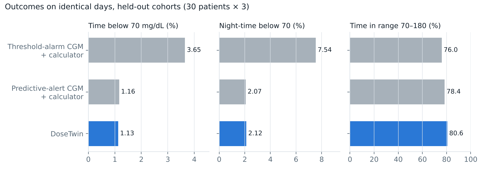

−69%
time below 70 mg/dL (3.65% → 1.13%)
−72%
night-time below 70 (7.5% → 2.1%)
+4.6 pts
time in range (95% CI 2.9 to 6.4)

Vs threshold-alarm CGM + bolus calculator, all p < 0.001. Vs premium predictive-alert CGM: TIR +2.2 (CI 0.05 to 4.6, p = 0.13), lows no different.